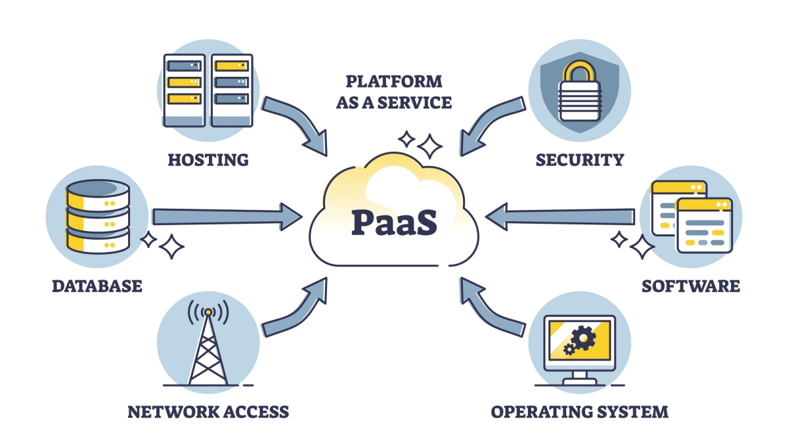
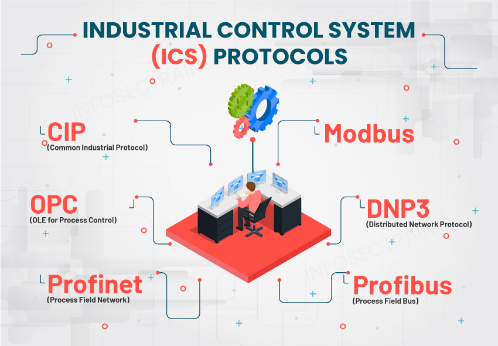

Welcome to Module three of the Cybersecurity Awareness Training course.
In this module you'll learn how to compare and contrast security implications of different architecture models and what to use on your devices.
Apply security principles to protect your devices and data. You will learn how to identify potential security risks and implement appropriate security controls.
Compare and contrast concepts and strategies to protect data. Also you will explain how to use resilience and recovery in security architecture.
Learning Objective
Understand why cybersecurity matters and recognize the role each person plays in protecting information and systems.
Cybersecurity Awareness Training
Module 3 • Securing/protecting your own Device
Page 2 of 9
Architecture and infrastructure concepts
The cloud's responsibility matrix splits security and management duties between the cloud service provider and you. Hypid cloud considerations consist of balancing data, security, and operational complexity by connecting private on-premises infrastructure with public cloud resources.
Also Third party vendors provide IT infrastructure to the cloud running the services that can protect your devices and keep your data and files in a secure location.
There are three main architectures to be aware of in DevOps, (PAC) platform as code, (IaC) infrastructure as Code, (SaC) Software as Code. PaC is when a company controls the entire development platform and relies on no third parties.
Pridgeon and Clay used PaC to build their own internal development platform to call internal users on the help desk. IaC is when a company uses a third party to provide the infrastructure and the company controls the software like AWS (Amazon Web Services) at Pridgeon and Clay. SaC is when a company uses a third party to provide both the infrastructure and the software like Zoom at Independent Bank.

Cybersecurity Term:
Network infranstructure is the hardware and software resources of an entire network that enable network connectivity, communication, operations, and management of an enterprise network. It provides the communication path and services between users, processes, applications, services, and external networks/the internet.
Considerations you need to consider before you pick what infranstructure you want to use are availability, resilience/responsiveness, cost, scalability/ease of deployment, and compute power/risk transference.
Cybersecurity Awareness Training
Module 3 • Securing/protecting your own Device
Page 3 of 9
Architecture and infrastructure concepts
An network infranstructure needs to be physically isolated from the internet to prevent ransomware, or other cyber attacks. Air-gapping is a common way to disconnect system from the network, wifi everything even wired connections. You use this to protect important information or running essential systems like industrial control systems for power plants, water grids, etc.
You can also use logical segmentation to divide your physical computer network into smaller virtual network segments to limit the spread of malware or unauthorized access. This can be done using firewalls, VLANs, and access control lists (ACLs) to create boundaries between different parts of the network. You can then use software defined rules to isolate your network. If you want to learn more about software defined networking (SDN) you can come here: https://www.ibm.com/think/topics/sdn
Centralized VS Decentralized
Centralized security relies on a single point of authority.
Decentralized security distributes desisions for security management across multiple independent business units.
Centralized security relies on one weak point, the central server where all desisions are made.
Decentralized security increases IT workload and a plan to maintain policies across your entire security scope.
Because both have their tradeoffs a Hybrid approach works best for most businesses. This is a central governing body that makes policies and standards and individual business units maintain day-to-day lifecycle management.
Industrial control systems (ICS) are used to control and monitor industrial processes in critical infrastructure sectors such as energy, water, transportation, and manufacturing. ICS are often connected to the internet or other networks, making them vulnerable to cyber attacks. To protect ICS from cyber threats, organizations can implement security measures such as network segmentation, access controls, intrusion detection systems, and regular security assessments. Supervisory Control and Data Acquisition (SCADA) systems, a subset of ICS, also require robust security to ensure the integrity and availability of critical operations.
An embedded system is a specialized computing system designed to perform a specific task or set of tasks. It is typically a combination of hardware and software, where the software is embedded into the hardware. Examples include microwave ovens, smart thermostats, and automotive control systems. Embedded systems often have real-time constraints and are optimized for efficiency and reliability. Security in embedded systems is crucial, especially in applications where they control critical functions or handle sensitive data. Measures such as secure boot, encryption, and regular firmware updates can help protect embedded systems from cyber threats.

An RTOS is an operating system designed to manage hardware resources and run applications in real-time. It ensures that tasks are executed within strict timing constraints, which is critical for time-sensitive applications.
Cybersecurity Awareness Training
Module 3 • Securing/protecting your own Device
Page 4 of 9
Compare and contrast concepts and strategies to protect data.
To compare and contrast strategies to protect data, you need to know the different types of data. You can have data that is regulated in your organization, like HIPAA. You can have trade secrets that are protected by intellectual property laws. Legal information is protected by attorney-client privilege. You can have personal data that is protected by privacy laws. You can have financial data that is protected by financial regulations. You can have operational data that is protected by internal policies. You can have public data that is not protected by any laws or regulations. Data can also be human readable and non-human readable like cipher text.
Data classifications
Description
Sensitive
Confidential information that requires protection because unauthorized access or exposure can cause harm like financial records, health information or passwords.
Confidential
Private information restricted to authorized individuals because its exposure causes financial loss or legal trouble, this could be business secrets and or login keys.
Public
Information that is legally available to everyone.
Restricted
Highly sensitive information that requires strict access controls like Social Security numbers.
Private
Information that is hidden to the public like Company trade secrets.
Critical
Any information vital to an organization's operations, decision-making, regulatory compliance, or financial success. This could be supply chain data or financial pricing information to name a few examples.
Remember:
Data protection strategies include encryption, access controls, regular backups, and employee training. Implementing these measures helps safeguard sensitive information from unauthorized access, loss, or corruption. To change the permissions of a file named config.txt you would use the following command in the terminal:
chmod 640 config.txt
This command sets the permissions to allow the owner (user) to read and write the file, the group to read and execute, and others to read and execute. The 640 permission set is commonly used for configuration files where the owner needs read access, while the group and others should have read access only. This ensures that the file remains secure while allowing necessary access for the group and others to make changes.
chmod 755 in the terminal means the owner can read, write, and execute; group and others can only read and execute and chmod 600 means only the owner can read and write; group and others have no access.
Cybersecurity Awareness Training
Module 3 • Securing/protecting your own Device
Page 5 of 9
General Data Considerations
Data usually comes in three different states: at rest, in transit, and in use. Data at rest is stored on a device or server. Data in transit is being transmitted over a network. Data in use is being processed by an application or system. Each state has different security considerations and requires different protection measures.
State
What it does
Data at rest
Data at rest is stored in a server or device waiting to be used.
Data in transit
This data is moving across the network like as soon as use send an email the data is traversing through the network to a router for example.
Data in use
Data in use is data in an application like playing candy crush on your phone.
Data Tips to secure data
Have geographic restrictions.
Encrypt/hash your data.
Use Tokenization, obfuscation (make something confusing on purpose), and or masking (hide your true self).
Segment your network.
Have permission restrictions like MFA (multi factor authentication).
Cybersecurity Awareness Training
Module 3 • Securing/protecting your own Device
Page 6 of 9
Given a scenario, apply security principles to secure enterprise infranstructure.
To secure enterprise infranstructure, you need to understand where devices are placed, security zones, and analyze attack surfaces which are all entry points on your network. You should always monitor all devices connected to your infranstructure.
Infrastructure consideration
Examples
Purpose
Failure modes
Fail-open and fail-close
Fail-open is when an error occurs like loss of power access or flow of data will continue while fail-close blocks and denies traffic.
Device attributes
Active, passive, Inline, and tap/monitor
Active devices require external power and can generate power while passive devices do not and only consume power. Inline devices make all data pass through them to monitor data and tap/monitor sit out-of-band. They receive a copy or exact of network traffic to analyze for threats.
Network applications
Jump Server, Proxy Server, IPS/IDS, load balancer, and sensors
A jump server is a secure server used to manage and access devices in a separate security zone, reducing the risk of unauthorized access. Proxy server acts as an intermediary between your device and the internet. IPS prevents intruders on your network and IDS detects and monitors intruders on your network. Load balancers distribute network traffic across multiple servers to ensure no single server becomes overwhelmed, improving performance and reliability. Sensors monitor network activity and collect data to detect and respond to potential security threats.
Port security and firewall types
802.1X, EAP, WAF, UTM, NGFW, layer 4/7
802.1X: A network access control protocol that authenticates devices before granting access. EAP: Extensible Authentication Protocol, used for secure communication in wireless networks. WAF: Web Application Firewall, protects web applications by filtering and monitoring HTTP traffic. UTM: Unified Threat Management, integrates multiple security features like firewall, antivirus, and intrusion prevention. NGFW: Next-Generation Firewall, provides advanced features like application awareness and intrusion prevention. Layer 4/7: Refers to network layers; Layer 4 handles transport protocols (e.g., TCP/UDP), and Layer 7 focuses on application-level data.
Network Infrastructure
Select effective controls to have a network infranstructure that is secure under VPNs, tunneling under TLS (encapsulating one data packet inside another data packet), using IPSec, a software defined wide area network (SD-WAN), and use SASE which means secure access service edge which is a cloud based framework that combines network and security into a single unified platform.
Cybersecurity Awareness Training
Module 3 • Securing/protecting your own Device
Page 7 of 9
Explain the importance of resilience and recovery in security architecture.
Data should have high availability, integrity, and confidentiality. You can offer high availability by load balancing, clustering, and failover. You can offer integrity by hashing, checksums, and digital signatures. You can offer confidentiality by encrypting data at rest and in transit.
Data centers play a critical role in ensuring data availability and operational continuity. To enhance redundancy and minimize downtime, data centers should be strategically located in geographically diverse regions. Implementing a hot site—a fully operational backup facility capable of immediate activation in the event of a primary site failure—is essential for maintaining seamless business operations. Alternatively, a warm site offers partial readiness and requires some preparation to become fully functional, while a cold site necessitates significant effort and time to achieve operational status.
Resilience and recovery
Simulations/fail overs
Capacity planning
Backups for hardware and software
Efficient Power
Platform diversity is essential for resilience and recovery in security architecture. By using a variety of platforms, organizations can reduce the risk of a single point of failure and ensure that critical systems remain operational even in the event of an attack or outage. This approach enhances overall system reliability and helps maintain business continuity.
Cybersecurity Awareness Training
Module 3 • Securing/protecting your own Device
Page 8 of 9
How security architecture can relate to securing your own device.
Multi-cloud platforms are a combination of public and private cloud services from different providers. They offer flexibility, scalability, and redundancy for organizations. However, they also introduce security challenges, such as inconsistent security policies, increased attack surfaces, and complex management. To secure multi-cloud environments, organizations should implement unified security policies, use encryption and access controls, monitor for threats across all platforms, and ensure compliance with relevant regulations.
Knowing these security vulnerabilities can inform you of how to protect your device. For instance, you might consider installing a reliable anti-virus tool on your phone to detect and prevent malware. Additionally, enabling two-factor authentication (2FA) can add an extra layer of security to your accounts, making it harder for unauthorized users to gain access. Regularly updating your device's operating system and applications ensures that you have the latest security patches to protect against known vulnerabilities. Lastly, being cautious about the apps you download and the permissions you grant can significantly reduce the risk of exposing your device to potential threats.
Just as security architecture involves layers of protection, your device benefits from multiple security measures like firewalls, antivirus software, and regular updates. By understanding concepts like network segmentation, encryption, and access controls, you can apply these strategies to secure your personal devices effectively.
Security Architecture
Security architecture principles can be applied to personal devices by implementing a multi-layered security approach. This includes using strong passwords, enabling biometric authentication, keeping software up to date, and being cautious of phishing attempts. By combining these measures, you create a robust defense against potential threats.
🎉 Module Complete
Cybersecurity Awareness Training
Page 9 of 9
Congratulations!
You have successfully completed Module 1: Security Fundamentals.
You now understand:
Why cybersecurity is important
Common cyber threats
Ransomware attacks
Types of malware
Security controls
Cryptography and PKI
Change management
Continue Learning
Cybersecurity is constantly evolving. Continue building your knowledge through trusted learning resources.